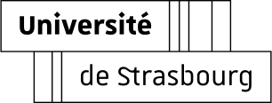

Readr
pour ADE

Ajouter un agenda
Pour ajouter votre agenda habituel, vous pouvez suivre
ce lien
et copier l’adresse obtenue dans le champ ci dessus, depuis la zone de texte ou en appuyant sur le bouton “coller”.